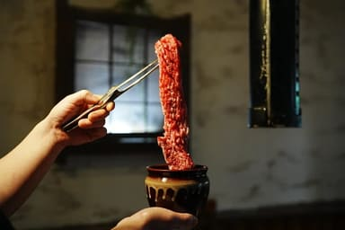
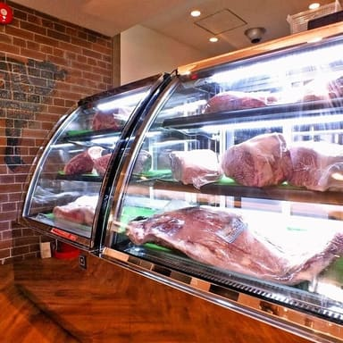

この時間帯のほかの候補
3
時間帯ごとに、行きたいお店にいいね。 いちばん多いお店がプランに入ります。

5 分
ホルモン焼肉 縁 渋谷店
焼肉店
4.7
2
6 分
韓の台所 別邸 渋谷店
韓国焼肉店
4.6
1

3 分
肉屋の台所 道玄坂
焼肉店
4.7
3
小 .pl-like（高さ 28・12px 800）= セルの写真の右下（.ts-pinw の中・right 6）。左 2 つ = 素、右 = .on（いいね済み）
焼肉店
営業中
4 分
4.5
いいね · 2
.pl-like.big（高さ 40・14px）= 店の下端の欄のボタンの列の先頭（row-reverse で右端）「いいね · N」
焼肉店
営業中
4 分
4.5
いいね · 3
.big.on = 泡の中を白 .2 で満たす + shadow-halo・ハートが塗られる（列 .dk-btns が横スクロールなので halo の外側は列の高さで切れる = 実画面も同じ）